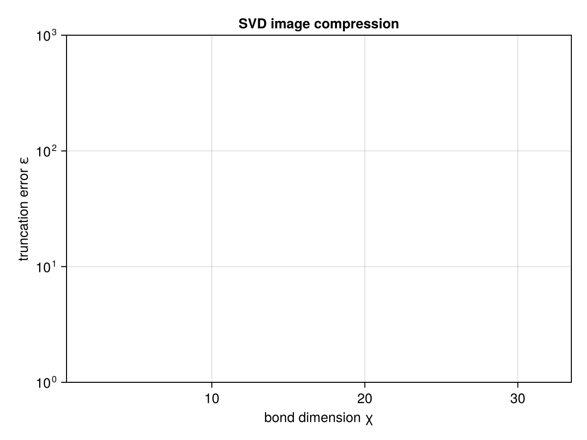

GS-2 · SVD & Truncation
Page info draft needs rewrite needs proofreading
| status | draft needs rewrite needs proofreading |
| last updated | 2026-07-10 |
| written by | Bavithra Govintharajah |
| edited by | Claude Sonnet 4.6 — initial draft |
Prerequisite: GS-1 (legs, QTensor, Bipartition).
The whole page is one function — do_svd(A, bp, trunc) — and one idea: the return type is the correctness guarantee. No truncation gives you a FullSVD (exact); any truncation gives you a ReducedSVD that carries its own error ε, so the approximation is impossible to forget.
using Qritical
using LinearAlgebra
using TensorOperations
using CairoMakie
using Random
Random.seed!(20260710) # fixed seed so rebuilds don't churn the printed outputRandom.TaskLocalRNG()1. One call, exact by default
Wrap a matrix as a rank-2 QTensor, cut it into {row | col}, and SVD with NoTrunc(). The NoTrunc type is the promise of exactness — the result is a FullSVD with no error field to carry.
m, n = 6, 4
Amat = randn(m, n)
A = QTensor(Amat, (upper(:i, m), lower(:j, n)))6×4 QTensor{Float64, 2, Matrix{Float64}}:
-0.480327 1.55835 0.0244543 1.29693
-0.792592 0.00173221 -0.65852 0.350661
-0.286976 0.903743 2.1776 -0.679682
-1.21161 -0.445667 -0.941448 1.42437
-0.0679285 -0.815002 3.41422 -0.0953633
1.50306 -1.23056 -0.0504355 3.71009e-5bp = bipartition(AbstractIx[A.indices[1]], A) # left = {:i}; right inferred = {:j}
F = do_svd(A, bp, NoTrunc())
typeof(F) # FullSVDFullSVDsvals = F.Σ.data.diag # the singular values (Σ.data is a Diagonal)
length(svals) # == min(m, n) = 44Reconstruction check — U·Σ·Vd ≈ A: U gets legs (upper(:i, m), lower(:λL, r)); Σ gets (upper(:λL, r), upper(:λR, r)); Vd gets (lower(:λR, r), lower(:j, n)).
@tensor Arec[i, j] := F.U[i, λL] * F.Σ[λL, λR] * F.Vd[λR, j]
maximum(abs, Arec .- Amat) # ≈ machine epsilon — reconstruction is exact4.440892098500626e-152. An SVD across a cut is a Schmidt decomposition
The same call on a higher-rank state tensor is the Schmidt decomposition: the Bipartition you choose is the entanglement cut, and the singular values are the Schmidt coefficients. Here is a rank-3 state Ψ[a, b, c] cut as {a | b, c}.
In Qritical's convention, physical / state indices are Upper (contravariant ket-expansion coefficients).
Ψ = QTensor(randn(2, 2, 2), (upper(:a, 2), upper(:b, 2), upper(:c, 2)))
cut = bipartition(AbstractIx[Ψ.indices[1]], Ψ) # {a | b,c}
S = do_svd(Ψ, cut, NoTrunc())
schmidt = S.Σ.data.diag
schmidt ./ sqrt(sum(abs2, schmidt)) # normalised Schmidt coefficients across the cut2-element Vector{Float64}:
0.9692652177623905
0.24601816525619744group_legs did the matricise-then-SVD internally; you only ever named the cut.
3. Truncation, and the error it costs
Three strategies, one interface. Only NoTrunc returns a FullSVD; the others return a ReducedSVD whose ε is the 2-norm of the discarded singular values, and whose r is the kept rank.
AbstractTrunc | keeps | returns |
|---|---|---|
NoTrunc() | all | FullSVD |
MaxBondDimTrunc(χ) | at most χ values | ReducedSVD |
ValCutoffTrunc(δ) | values > δ | ReducedSVD |
Sweep the bond cap and watch the error rise as you keep fewer values.
for χ in 1:length(svals)
R = do_svd(A, bp, MaxBondDimTrunc(χ))
println("χ = $χ kept r = $(R.r) ε = $(round(R.ε; sigdigits=3))")
endχ = 1 kept r = 1 ε = 3.7
χ = 2 kept r = 2 ε = 2.34
χ = 3 kept r = 3 ε = 1.26
χ = 4 kept r = 4 ε = 0.0
ε is exactly the Frobenius distance ‖A − U·Σ·Vd‖_F you traded for the smaller bond.
4. Application: low-rank image compression
The classic SVD demo. We use a smooth synthetic grayscale image so the page has no image-file dependency. Truncating the SVD keeps only the largest singular directions — the same reason low-entanglement quantum states compress well as MPS.
gridx = range(-3, 3; length = 128)
img = [exp(-(x^2 + y^2)/4) * cos(2x) * sin(1.5y) for y in gridx, x in gridx]
Aimg = QTensor(img, (upper(:row, size(img,1)), lower(:col, size(img,2))))
bpimg = bipartition(AbstractIx[Aimg.indices[1]], Aimg)
errs = Float64[]
χs = (2, 4, 8, 16, 32)
for χ in χs
R = do_svd(Aimg, bpimg, MaxBondDimTrunc(χ))
push!(errs, R.ε)
endfig = Figure()
ax = Axis(fig[1,1]; xlabel = "bond dimension χ", ylabel = "truncation error ε",
yscale = log10, title = "SVD image compression")
scatterlines!(ax, collect(χs), errs)
fig
Deferred: §5 entanglement entropy
Product state → S = 0; Bell pair → 1 bit, via entanglement_entropy(; base = 2) on a SchmidtSpectrum. Deferred until SchmidtSpectrum is fully wired; see entanglement_entropy and entanglement_spectrum in the API reference.
cf. quimb's tensor_split: Qritical folds matricise + SVD + truncate into one typed call, and pushes the truncation error into the return type.
This page was generated using Literate.jl.